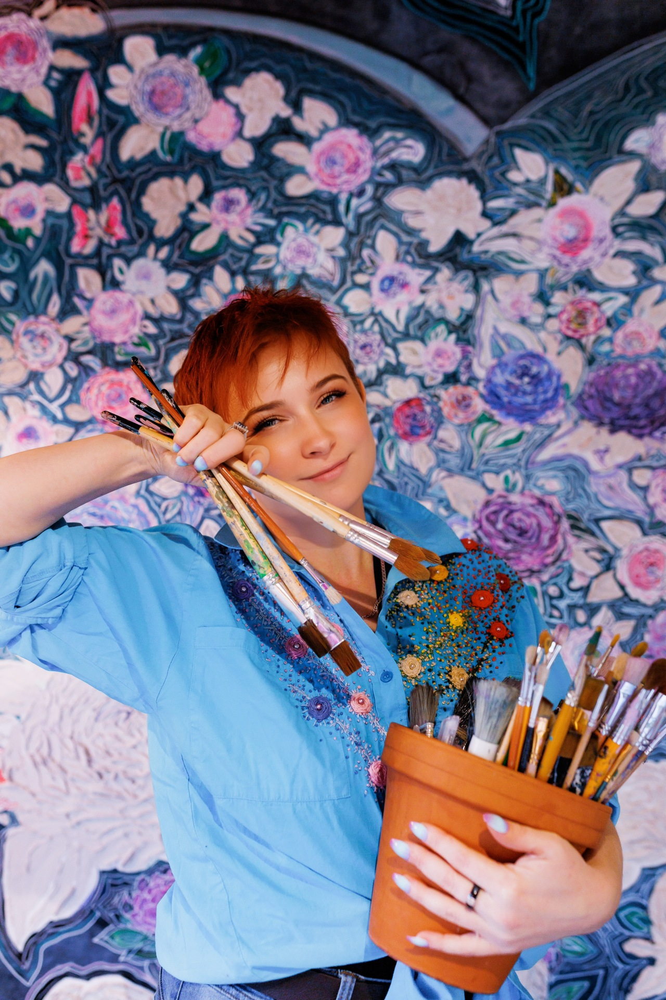

Jak to się zaczęło? [How It All Began]
Moja artystyczna podróż zaczęła się w cichym, ciepłym domu babci. Jako mała dziewczynka, zafascynowana obrazkami leżącymi na stoliku, sięgnęłam po kartkę i spróbowałam przelać ten zachwyt na papier. Gdy babcia zobaczyła mój rysunek, w jej oczach pojawił się błysk. To była ta jedna, wyjątkowa chwila – spojrzała na mnie i z pełną przekonania czułością przepowiedziała, że zostanę malarką.
I miała rację. Głód tworzenia, pasję i żyłkę do eksperymentowania w najróżniejszych dziedzinach sztuki odziedziczyłam po wujku. To dzięki temu połączeniu dziś z taką samą radością sięgam po pędzel, igłę czy stare drewno, ciągle odkrywając coś nowego.
Zapraszam Cię do obejrzenia filmiku. Usiądź z nami i posłuchaj, jak razem z babcią wracamy do momentu, w którym to wszystko się narodziło.
[My artistic journey began in my grandmother's quiet, warm home. As a little girl, fascinated by the pictures lying on the table, I reached for a sheet of paper and tried to capture that sense of wonder on the page. When my grandmother saw my drawing, a spark appeared in her eyes. It was that one special moment — she looked at me and, with heartfelt tenderness and absolute conviction, predicted that I would become a painter.
And she was right. I inherited my hunger to create, my passion, and my love for experimenting with all kinds of artistic disciplines from my uncle. Thanks to this combination, today I reach for a paintbrush, a needle, or a piece of old wood with the same joy, constantly discovering something new.
I invite you to watch the video. Sit down with us and listen as my grandmother and I return together to the moment when it all began.]